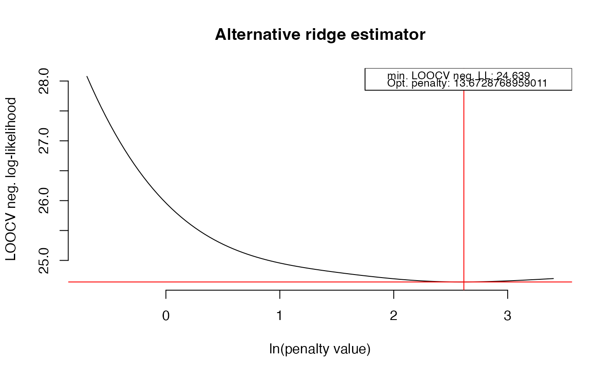

Function that determines the support of a partial correlation/precision matrix by thresholding and sparsifies it accordingly.
sparsify(
P,
threshold = c("absValue", "connected", "localFDR", "top"),
absValueCut = 0.25,
FDRcut = 0.9,
top = 10,
output = "heavy",
verbose = TRUE
)Arguments
- P
(Possibly regularized) precision
matrix.- threshold
A
charactersignifying type of sparsification by thresholding. Must be one of: "absValue", "connected", "localFDR", "top".- absValueCut
A
numericgiving the cut-off for partial correlation element selection based on absolute value thresholding.- FDRcut
A
numericgiving the cut-off for partial correlation element selection based on local false discovery rate (FDR) thresholding.- top
A
numericspecifying the exact number of partial correlation elements to retain based on absolute value.- output
A
characterspecifying the type of output required. Must be one of: "heavy", "light".- verbose
A
logicalindicating if intermediate output should be printed on screen.
Value
If the input P is a standardized precision (or partial
correlation) matrix the function returns a sparsified precision (or partial
correlation) matrix whenever output = "heavy". If the input
P is an unstandardized precision matrix the function returns an
object of class list whenever output = "heavy":
- sparseParCor
A
matrixrepresenting the sparsified partial correlation matrix.- sparsePrecision
A
matrixrepresenting the sparsified precision matrix.
When output = "light", only the (matrix) positions of the zero and
non-zero elements are returned in an object of class list:
- zeros
A
matrixrepresenting the row and column positions of zero entries.- nonzeros
A
matrixrepresenting the row and column positions of non-zero entries.
Details
The function transforms the possibly regularized input precision matrix to a
partial correlation matrix. Subsequently, the support of this partial
correlation matrix is determined. Support determination is performed either
by simple thresholding on the absolute values of matrix entries
(threshold = "absValue") or by usage of local FDR (threshold =
"localFDR"). A third option is to retain a prespecified number of matrix
entries based on absolute values. For example, one could wish to retain
those entries representing the ten strongest absolute partial correlations
(threshold = "top"). As a variation on this theme, a fourth option
(threshold = "connected") retains the top edges such that the
resulting graph is connected (this may result in dense graphs in practice).
The argument absValueCut is only used when threshold =
"absValue". The argument top is only used when threshold =
"top". The argument FDRcut is only used when threshold =
"localFDR".
The function is to some extent a wrapper around certain
fdrtool functions when
threshold = "localFDR". In that case a mixture model is fitted to the
nonredundant partial correlations by
fdrtool. The decision to
retain elements is then based on the argument FDRcut. Elements with a
posterior probability \(\geq\) FDRcut (equalling 1 - local FDR) are
retained. See Schaefer and Strimmer (2005) for further details on usage of
local FDR in graphical modeling.
References
Schaefer, J., and Strimmer, K. (2005). A shrinkage approach to large-scale covariance estimation and implications for functional genomics. Statistical Applications in Genetics and Molecular Biology, 4:32.
See also
Examples
## Obtain some (high-dimensional) data
p = 25
n = 10
set.seed(333)
X = matrix(rnorm(n*p), nrow = n, ncol = p)
colnames(X)[1:25] = letters[1:25]
## Obtain regularized precision under optimal penalty
OPT <- optPenalty.LOOCV(X, lambdaMin = .5, lambdaMax = 30, step = 100)
#> Perform input checks...
#> Calculating cross-validated negative log-likelihoods...
#> lambda = 0.5 done
#> lambda = 0.521112064796442 done
#> lambda = 0.543115568152822 done
#> lambda = 0.56604815028642 done
#> lambda = 0.589949040739926 done
#> lambda = 0.614859125489326 done
#> lambda = 0.640821016885354 done
#> lambda = 0.667879126548165 done
#> lambda = 0.696079741339917 done
#> lambda = 0.725471102545235 done
#> lambda = 0.756103488394997 done
#> lambda = 0.788029300074619 done
#> lambda = 0.821303151363959 done
#> lambda = 0.855981962062195 done
#> lambda = 0.89212505535748 done
#> lambda = 0.929794259307953 done
#> lambda = 0.969054012607691 done
#> lambda = 1.00997147481854 done
#> lambda = 1.0526166412564 done
#> lambda = 1.09706246272843 done
#> lambda = 1.14338497032617 done
#> lambda = 1.19166340548777 done
#> lambda = 1.24198035555219 done
#> lambda = 1.29442189503684 done
#> lambda = 1.34907773288074 done
#> lambda = 1.40604136590477 done
#> lambda = 1.46541023875169 done
#> lambda = 1.52728591057948 done
#> lambda = 1.59177422879317 done
#> lambda = 1.65898551011235 done
#> lambda = 1.72903472928405 done
#> lambda = 1.80204171576394 done
#> lambda = 1.87813135870213 done
#> lambda = 1.95743382058443 done
#> lambda = 2.04008475989428 done
#> lambda = 2.12622556317653 done
#> lambda = 2.21600358689979 done
#> lambda = 2.30957240953135 done
#> lambda = 2.40709209425555 done
#> lambda = 2.5087294627854 done
#> lambda = 2.61465838073554 done
#> lambda = 2.72506005504483 done
#> lambda = 2.84012334395744 done
#> lambda = 2.96004508009247 done
#> lambda = 3.08503040715507 done
#> lambda = 3.21529313086478 done
#> lambda = 3.35105608470152 done
#> lambda = 3.49255151109498 done
#> lambda = 3.64002145870927 done
#> lambda = 3.79371819650269 done
#> lambda = 3.9539046452707 done
#> lambda = 4.12085482741052 done
#> lambda = 4.29485433567656 done
#> lambda = 4.47620082172873 done
#> lambda = 4.66520450530918 done
#> lambda = 4.86218870491866 done
#> lambda = 5.0674903909002 done
#> lambda = 5.28146076187626 done
#> lambda = 5.50446584552545 done
#> lambda = 5.73688712472652 done
#> lambda = 5.97912219014072 done
#> lambda = 6.23158542034891 done
#> lambda = 6.49470869070685 done
#> lambda = 6.76894211213128 done
#> lambda = 7.05475480108065 done
#> lambda = 7.3526356820475 done
#> lambda = 7.66309432393553 done
#> lambda = 7.98666181175188 done
#> lambda = 8.32389165510583 done
#> lambda = 8.67536073506814 done
#> lambda = 9.04167029101067 done
#> lambda = 9.42344694911443 done
#> lambda = 9.8213437943055 done
#> lambda = 10.2360414874525 done
#> lambda = 10.6682494297369 done
#> lambda = 11.1187069761873 done
#> lambda = 11.5881847004551 done
#> lambda = 12.0774857129934 done
#> lambda = 12.587447034895 done
#> lambda = 13.11894102974 done
#> lambda = 13.6728768959011 done
#> lambda = 14.2502022218612 done
#> lambda = 14.8519046072019 done
#> lambda = 15.4790133520375 done
#> lambda = 16.1326012177839 done
#> lambda = 16.813786262274 done
#> lambda = 17.5237337523593 done
#> lambda = 18.2636581572701 done
#> lambda = 19.0348252261428 done
#> lambda = 19.8385541532693 done
#> lambda = 20.6762198347724 done
#> lambda = 21.5492552205668 done
#> lambda = 22.4591537656302 done
#> lambda = 23.4074719847766 done
#> lambda = 24.3958321153036 done
#> lambda = 25.4259248920664 done
#> lambda = 26.499512439728 done
#> lambda = 27.6184312871313 done
#> lambda = 28.7845955089513 done
#> lambda = 30 done

## Determine support regularized (standardized) precision under optimal penalty
sparsify(OPT$optPrec, threshold = "localFDR")
#> Step 1... determine cutoff point
#> Step 2... estimate parameters of null distribution and eta0
#> Step 3... compute p-values and estimate empirical PDF/CDF
#> Step 4... compute q-values and local fdr
#> Step 5... prepare for plotting
 #>
#> - Retained elements: 11
#> - Corresponding to 3.67 % of possible edges
#>
#> $sparseParCor
#> A 25 x 25 ridge precision matrix estimate with lambda = 13.672877
#> a b c d e f …
#> a 1.0000000 0 0.0641852 0 0 0 …
#> b 0.0000000 1 0.0000000 0 0 0 …
#> c 0.0641852 0 1.0000000 0 0 0 …
#> d 0.0000000 0 0.0000000 1 0 0 …
#> e 0.0000000 0 0.0000000 0 1 0 …
#> f 0.0000000 0 0.0000000 0 0 1 …
#> … 19 more rows and 19 more columns
#>
#> $sparsePrecision
#> A 25 x 25 ridge precision matrix estimate with lambda = 13.672877
#> a b c d e f …
#> a 0.7549828 0.0000000 -0.0485885 0.0000000 0.0000000 0.0000000 …
#> b 0.0000000 0.8055621 0.0000000 0.0000000 0.0000000 0.0000000 …
#> c -0.0485885 0.0000000 0.7590321 0.0000000 0.0000000 0.0000000 …
#> d 0.0000000 0.0000000 0.0000000 0.8004351 0.0000000 0.0000000 …
#> e 0.0000000 0.0000000 0.0000000 0.0000000 0.7669782 0.0000000 …
#> f 0.0000000 0.0000000 0.0000000 0.0000000 0.0000000 0.8103307 …
#> … 19 more rows and 19 more columns
#>
#>
#> - Retained elements: 11
#> - Corresponding to 3.67 % of possible edges
#>
#> $sparseParCor
#> A 25 x 25 ridge precision matrix estimate with lambda = 13.672877
#> a b c d e f …
#> a 1.0000000 0 0.0641852 0 0 0 …
#> b 0.0000000 1 0.0000000 0 0 0 …
#> c 0.0641852 0 1.0000000 0 0 0 …
#> d 0.0000000 0 0.0000000 1 0 0 …
#> e 0.0000000 0 0.0000000 0 1 0 …
#> f 0.0000000 0 0.0000000 0 0 1 …
#> … 19 more rows and 19 more columns
#>
#> $sparsePrecision
#> A 25 x 25 ridge precision matrix estimate with lambda = 13.672877
#> a b c d e f …
#> a 0.7549828 0.0000000 -0.0485885 0.0000000 0.0000000 0.0000000 …
#> b 0.0000000 0.8055621 0.0000000 0.0000000 0.0000000 0.0000000 …
#> c -0.0485885 0.0000000 0.7590321 0.0000000 0.0000000 0.0000000 …
#> d 0.0000000 0.0000000 0.0000000 0.8004351 0.0000000 0.0000000 …
#> e 0.0000000 0.0000000 0.0000000 0.0000000 0.7669782 0.0000000 …
#> f 0.0000000 0.0000000 0.0000000 0.0000000 0.0000000 0.8103307 …
#> … 19 more rows and 19 more columns
#>